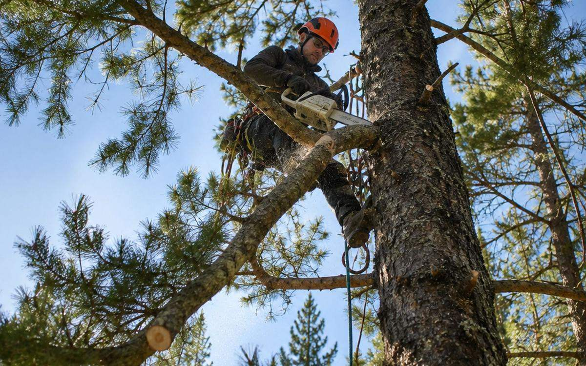
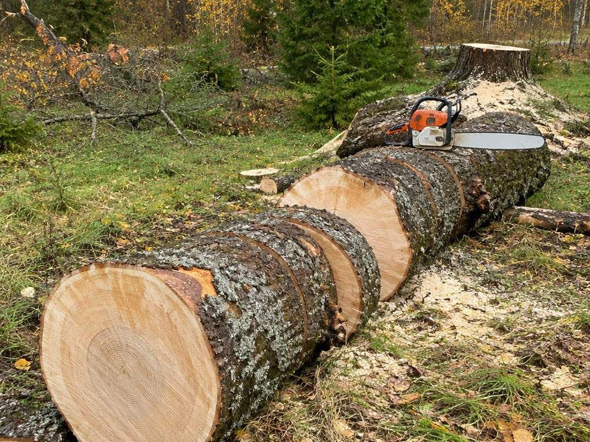
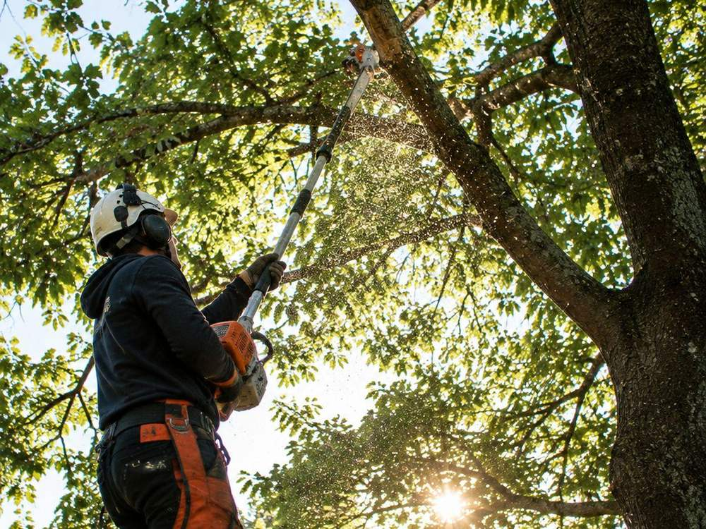
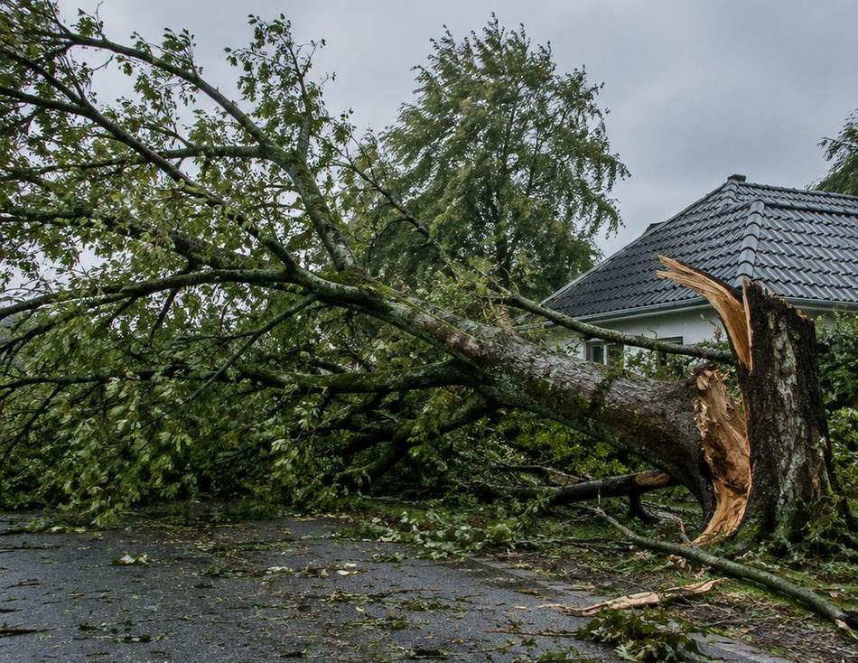
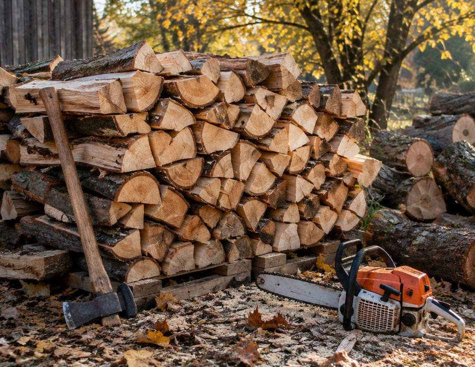
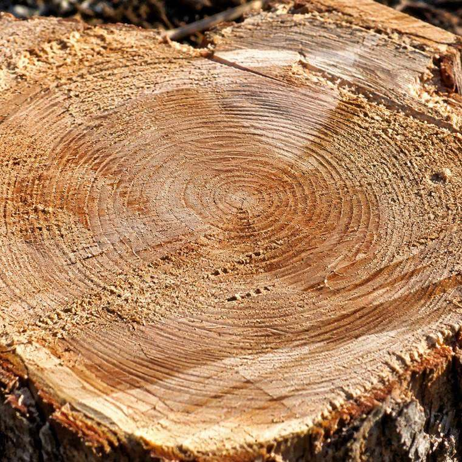

валка
Удаление деревьев
Валка любой сложности: целиком, если есть место, или по частям альпинистическим методом с подвесом веток на верёвках. Сложные и аварийные деревья — обычная работа.
Подробнее →
Гродно и область · круглый год
Валка и спиливание любой сложности альпинистическим методом: снимаем дерево секциями на верёвках, чтобы не задеть дом, забор и провода. Арбористика, обрезка, последствия ураганов, покос и дрова.
Как снимем
Дерево рядом с домом не валят целиком. Двиньте ползунки — увидите, когда хватает свободной валки, а когда ствол снимают по секциям на верёвках.
Дерево выше расстояния до препятствия — валим по частям.
Расчёт ориентировочный: реальную схему валки определяем на месте. В охранной зоне ЛЭП порядок работ согласуем заранее, на кладбище учитываем проходы и памятники.
Отправить параметрыУслуги
Пилю деревья, обрезаю ветки, убираю последствия бури, кошу траву и распиливаю дрова. Можно одну операцию, можно весь участок за один выезд.
валка
Валка любой сложности: целиком, если есть место, или по частям альпинистическим методом с подвесом веток на верёвках. Сложные и аварийные деревья — обычная работа.
Подробнее →обрезка
Санитарная и формирующая обрезка деревьев, стрижка кустов и живой изгороди. Убираем сухие и опасные ветки, которые могут упасть на дом или провода.
Подробнее →аварийные
Упавшее дерево на крышу, забор или дорогу — выезжаем и разбираем. Работаем с расщеплёнными стволами и зависшими ветками, которые опасно трогать без снаряжения.
Подробнее →лэп
Работаем в стеснённых местах: у линий электропередачи, над могилами, между заборами и постройками. Ветки снимаем по частям, чтобы ничего не задеть.
Подробнее →покос
Косим траву и убираем мелкую поросль: участки, обочины, кладбища, запущенные дворы. Поросль и кустарник убираем вместе с корнем или под корень — как нужно.
Подробнее →дрова
Распиливаем стволы на чурки, колем и складываем. Если дерево валили мы — дрова можно оставить себе, а лишнее увезём по договорённости.
Подробнее →Объём работ
Отметьте, что нужно и сколько: деревья, обрезка, покос, дрова. Список уйдёт в WhatsApp одним сообщением — по нему проще назвать цену и время.
Высота и наклон — уточним по фото
Деревья, кусты, изгородь
Участок, обочины, кладбище
Распиловка и колка
Работы
Валка по частям, обрезка с подъёмом, разбор завалов, распиловка. Часть фото — типовые примеры, снимки своих объектов присылаем в WhatsApp.




Порядок
Сначала смотрим, что стоит рядом, потом пилим. Если дерево аварийное и уже упало — сразу говорим, что нужно сделать в первую очередь.
Присылаете фото дерева и двора, высоту и что рядом.
Смотрим ствол, наклон, провода, заезд техники.
Валим целиком или снимаем по секциям на верёвках.
Складываем ветки, распиливаем ствол, убираем за собой.
Вопросы
Для дерева на своей земле — отдельное разрешение не нужно. Для городской земли, дворов и объектов организаций действует свой порядок, и его уточняют до работ. Скажите, где стоит дерево, — подскажем, что понадобится.
По фотографии и описанию можно дать вилку: важны высота, наклон, что рядом и куда складывать ветки. Точную сумму называем после осмотра, до начала работ.
Приезжаем и разбираем: распиливаем на части, снимаем ветки, освобождаем проезд или крышу. Если ствол завис или расщепился — трогать его самостоятельно опасно.
Да, но в охранной зоне ЛЭП порядок работ согласуем заранее. Ветки снимаем по частям с подвесом, чтобы не было касания проводов.
Ветки и ствол убираем или распиливаем по договорённости, дрова можно оставить себе. По пням — скажите, нужна ли выкорчёвка, это отдельная задача.
Да. Работаем зимой и летом, с организациями тоже: наличный и безналичный расчёт, документы по запросу.

Фото ствола и двора, примерная высота и что рядом: дом, забор, провода. По этому уже можно назвать порядок работ и вилку по цене, точную — после осмотра.